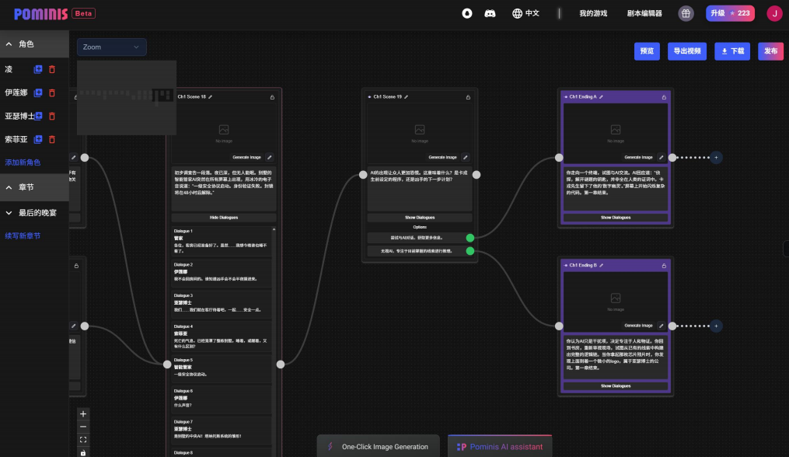
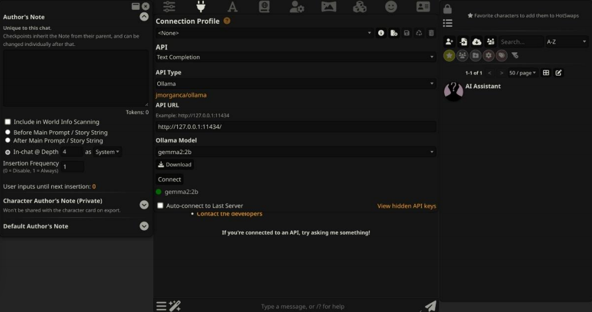
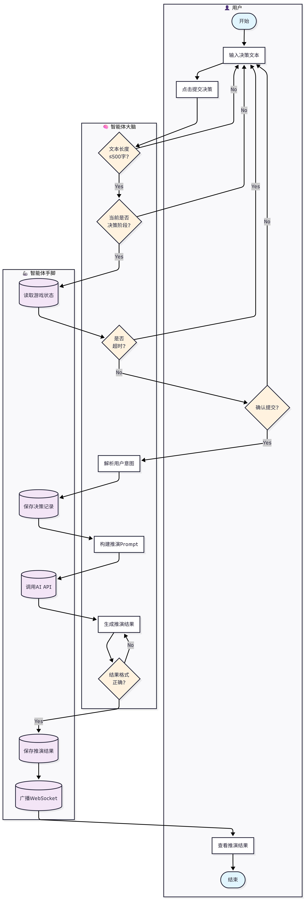
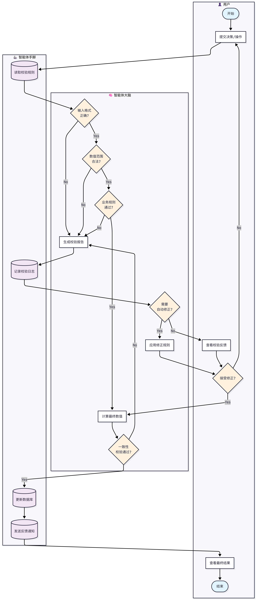
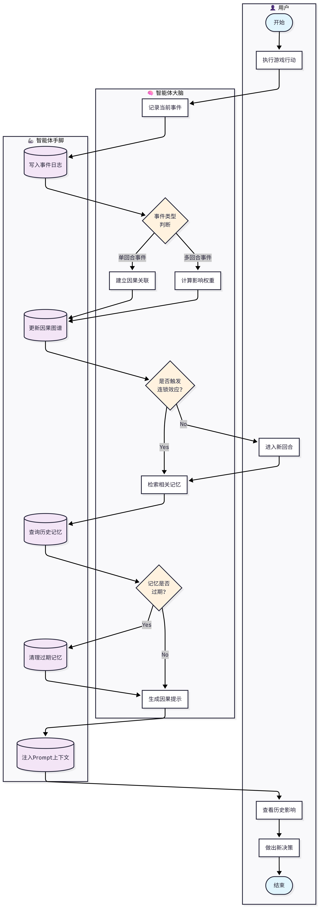
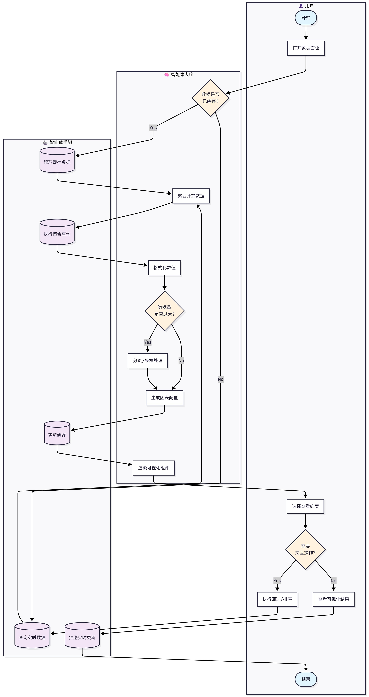
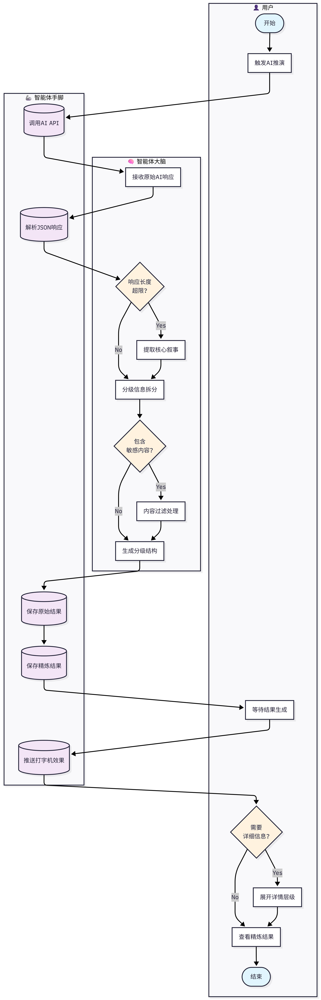
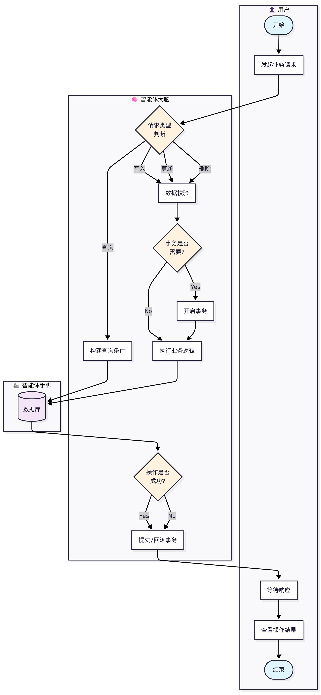

1. 需求定义 (Requirement)
游戏背景与出发点
在现在的 AI 文字游戏中，AI 经常“胡说八道”或者记不住之前的设定。尤其在多人玩的时候，AI 很难同时管好每个人的数值和剧情。我们想做一个能帮 AI 记账、管规则的系统，让文字博弈游戏玩起来更顺畅、更公平。
用户痛点锚定
- 痛点 1：AI 记不住数。玩着玩着 AI 就忘了玩家有多少钱或什么装备，导致数值崩坏。
- 痛点 2：多人玩会乱。几个人同时操作时，AI 处理不过来，逻辑容易打架。
- 痛点 3：没法复盘。输了不知道为什么输，想回看之前的操作和 AI 的判定逻辑很麻烦。
竞品分析对比
直接竞品

pominis

SillyTavern
间接竞品

AI Dungeon

Character AI
对比维度：功能全不全、好不好上手、AI 逻辑稳不稳定。
一句话总结：别的工具大多是用来单人聊天或写小说的，我们更侧重多人玩游戏时的“规则管理”和“数值不掉线”。
一句话总结：别的工具大多是用来单人聊天或写小说的，我们更侧重多人玩游戏时的“规则管理”和“数值不掉线”。
核心功能矩阵 (Feature Matrix)
决策结构化解析
防止指令污染，过滤违规输入
跨主体影响映射
追踪多主体数据变动，映射合作竞争关系
状态快照与版本控制
完整游戏时间线，支持100%回溯复盘
自动化属性校验
接管核心数值，消除AI数值幻觉
功能模块图谱
用户系统
实时表单验证
JWT Token认证
头像管理
管理员工具
房间管理
动态创建/加入
加密房间
API/规则初始化
决策时限控制
游戏核心机制
回合状态同步
AI 3选1选项生成
主持人审核
打字机剧情展示
实时通信
WebSocket长连接
心跳检测
断线重连
状态实时推送
竞争博弈机制
资源管理（金币/能量）
玩家排名系统
胜负判定
策略评估
历史记录管理
多维度筛选查询
完整路径追溯
历史记录删除
业务闭环流程
1
用户注册
2
房间初始化
3
开启回合循环
4
玩家提交/主持人审核
5
AI推演剧情
6
游戏结束复盘
2. 方案设计 (Solution)
角色人设构建
推演引擎 (Inference Engine):
核心逻辑：严格遵循 JSON Mode，每回合以“季度”为单位结算。
人设：客观、专业的中立主持人，不替玩家做决策。
核心逻辑：严格遵循 JSON Mode，每回合以“季度”为单位结算。
人设：客观、专业的中立主持人，不替玩家做决策。
选项生成器 (Option Generator):
核心逻辑：基于当前状态生成 3-4 个多样化决策方案。
人设：策略助手，涵盖进攻/防御/探索等方向。
核心逻辑：基于当前状态生成 3-4 个多样化决策方案。
人设：策略助手，涵盖进攻/防御/探索等方向。
数据公证人 (Data Notary):
核心逻辑：强制数值核算，消除 AI 幻觉。
人设：严谨的“记账员”，确保财务和属性真实可靠。
核心逻辑：强制数值核算，消除 AI 幻觉。
人设：严谨的“记账员”，确保财务和属性真实可靠。
业务流程泳道图 (点击放大)

主线任务指引
输入解析 - 陈卓

反馈系统
数值校验 - 伍慧欣

跨周期记忆 (因果引擎): 对应 llm_engine.py 中的“未来事件对象”挂载与世界时间胶囊

可视化数据面板
郄昊曈

回复信息精炼 (分级反馈): 对应推演结束后的“风险/机会/效益”三类反馈卡片生成

数据库操作流程
PostgreSQL + Prisma
业务泳道图 工作流节点映射：用户输入触发LLM选择器 大脑层执行逻辑判断 手脚层调用工具执行
外部资源整合
知识库注入：游戏规则通过Prompt注入LLM上下文
插件触发：决策提交 触发AI推演 回调结果存储
向量数据库
WebSocket 实时同步
Redis 状态快照
技术底层实现
实时通信：使用
Socket.io
实现 round_stage_changed 状态实时同步。
异步推演：Node.js 异步函数配合 Redis 队列处理高负载 AI 推演任务。
数据一致性：通过
Prisma ORM
事务确保“决策-推演-存盘”过程原子化。
智能体架构 (Agent Architecture)
回合状态流转
用户层
输入决策 / 查看结果
超时检测 / 格式校验
智能体大脑
buildPrompt() / callAI()
parseResponse() / 校验
智能体手脚
Prisma / Redis / WebSocket
状态持久化 / 广播
关键决策节点
1
session.status 检查
2
roundStatus 阶段判断
3
decisionDeadline 超时
4
ensureRoomHost 权限
节点效用
防止指令污染 - hostModification审核
消除数值幻觉 - JSON Schema强制格式
跨周期记忆 - TemporaryEvent追踪
实时状态同步 - WebSocket广播
分级反馈 - risk/opportunity/benefit卡片
工作流模块
决策收集
超时检测
格式校验
PlayerAction存储
状态广播
POST /:sessionId/decision
主持人审核
决策预览
hostModification
临时事件注入
提交推演
POST /start-review
AI推演引擎
buildPrompt()
callAI() 5次重试
parseResponse()
Redis结果缓存
aiService.ts
结果解析
JSON提取
TurnResultDTO映射
排行榜生成
卦象解析
buildTurnResultDTO()
状态同步
WebSocket推送
stage_changed事件
自动存档
下一回合
io.emit()
3. Debug 复盘 (Development Journey)
开发过程中的挑战与突破
BUG #1
Prisma 迁移卡顿
问题现象：
prisma migrate dev 在批处理脚本中提示输入迁移名称（y/N），导致脚本卡住无法继续执行。
解决方案：非交互式迁移
使用
--name auto_migration_$(date) 自动生成迁移名称，添加 --skip-seed 避免额外交互。
BUG #2
中文用户名编码乱码
问题现象：
管理员用户名"开发者账号"在不同环境下出现编码乱码，导致权限验证失败，无法进入管理面板。
解决方案：统一英文标识
默认值改为
developer，同时保留对旧值的兼容性支持。涉及 admin.ts、UserRegistryPanel.tsx 等文件。
BUG #3
AI 推演结果不可见
问题现象：
推演完成后，主持人/玩家都"卡在审核"页面，需要手动敲 URL 才能看到结果，用户体验极差。
解决方案：事件驱动跳转
监听
game_state_update 事件，当 roundStatus === 'result' 时自动导航到结果页。
BUG #4
前端 API 响应解包错误
问题现象：
getRoundDecisions、nextRound 等接口返回空数据，因为错误地访问了 response.data.data。
解决方案：统一解包结构
按
{ code, data } 结构解包，正确提取 data 字段。涉及 services/game.ts。
用户体验优化
返回按钮
9 个页面
实时刷新
10-15秒轮询
连接状态
绿/黄/红指示
错误提示
详细解决建议
经验总结
- 1. 跨平台脚本避免使用中文，统一 ASCII 字符
- 2. 网络请求必须有重试机制和超时处理
- 3. WebSocket 事件驱动的页面跳转要及时
- 4. API 响应结构要统一，前端解包要一致
4. 产品评估 (Evaluation)
3H 质量评估
Helpful (有用性)
减少人工主持80%重复工作
Honest (诚实性)
推演过程可追溯、结果可解释
Harmless (无害性)
输入过滤 + 数值边界保护
效率提效量化
AI推演准确率
78%
多人协作响应
82%
决策追溯覆盖
92%
局限与演进规划
当前版本短板
- AI推演响应延迟（平均8-15秒）
- 边界情况处理不完善（极端输入）
- 长周期记忆上下文窗口受限
下阶段迭代规划
- 引入流式输出，优化响应体验
- 增强输入过滤与异常兜底机制
- 接入向量数据库实现长期记忆
项目资料索引 (Assets)
产品介绍.pdf
汇报演示.pptx
泳道图/流程
API 文档